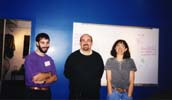

Research Interests
My mathematical research interests include geometric group theory,
topology and some related areas.
Publications and some preprints (see also my departmental publications page, often more up-to-date)
- "Edge conflicts do not determine geodesics in the associahedron",
Sean Cleary and Roland Maio
There are no known efficient algorithms to calculate distance in the one-skeleta of associahedra, a problem which is equivalent to finding rotation distance between rooted binary trees. One approximate measure of distance in associahedra is the extent to which the edges in the attached triangulations are incompatible, and a natural way of trying to find shortest paths is to maximize locally the number of compatible edges between triangulations. Such steps minimize the number of conflicting edges between these triangulations. We describe examples which show that the number of conflicts does not always decrease along geodesics. Thus, a greedy algorithm which always chooses a transformation which reduces conflicts will not produce a geodesic in all cases. Further, there are examples of increasing size showing that the number of conflicts can increase by any specified amount.
- arXiv preprint
- "Obstructions for subgroups of Thompson's group V", to appear, Proceedings for the Durham Symposium on Geometric and Cohomological Group Theory, London Mathematical Society
Thompson's group V has a rich variety of subgroups, containing all finite groups, all finitely generated free groups and all finitely generated abelian groups, the finitary permutation group of a countable set, as well as many wreath products and other families of groups. Here, we describe some obstructions for a given group to be a subgroup of V. -
arXiv preprint
- "Undistorted embeddings of metabelian groups of finite Prufer rank,"
(with Conchita Martinez-Perez), New York Journal of Mathematics, 21 (2015) 1027-1054.
General arguments of Baumslag and Bieri guarantee that any metabelian group
of finite Prufer rank can be embedded in a metabelian constructible group.
Here, we consider the metric behavior of a rich class of examples and analyze
the distortions of specific embeddings.
- arXiv preprint
- "Commensurations and Metric Properties of Houghton's Groups", (with Jose Burillo, Armando Martino, and Claas Roever), Pacific Journal of Math, to appear.
We describe the automorphism groups and the abstract commensurators of Houghton's groups. Then we give sharp estimates for the word metric of these groups and deduce that the commensurators embed into the corresponding quasi-isometry groups. As a further consequence, we obtain that the Houghton group on two rays is at least quadratically distorted in those with three or more rays.
- arXiv preprint
- "Expected maximum vertex valence in pairs of polygonal triangulations" (with Timothy Chu), Involve, a journal of mathematics Vol. 8 (2015), No. 5, 763–770.
Edge-flip distance between triangulations of polygons is equivalent to rotation distance between rooted binary trees. Both distances measure the extent of similarity of configurations. There are no known polynomial-time algorithms for computing edge-flip distance. The best known exact universal upper bounds on rotation distance arise from measuring the maximum total va- lence of a vertex in the corresponding triangulation pair obtained by a duality construction. Here we describe some properties of the distribution of maximum vertex valences of pairs of triangulations related to such upper bounds.
- "Average reductions between random tree pairs" (with John Passano and Yasser Turno), Involve, a journal of mathematics. 2015 Vol 8-1.
There are a number of measures of degrees of similarity between rooted binary trees. Many of these ignore sections of the trees which are in complete agreement. We use computational experiments to investigate the statistical characteristics of such a measure of tree similarity for ordered, rooted, binary trees. We generate the trees used in the experiments iteratively, using the Yule process modeled upon speciation.
- "Common edges in rooted trees and polygonal triangulations," (with Andrew Rechnitzer and Thomas Wong), Electronic Journal of Combinatorics. 2013, Vol. 29, #1,
Rotation distance between rooted binary trees measures the degree of similarity of two trees with ordered leaves and is
equivalent to edge-flip distance between triangular subdivisions of regular polygons.
There are no known polynomial-time algorithms for computing rotation distance. Existence of common edges makes computing rotation distance more manageable by breaking the problem into smaller subproblems.
Here we describe the distribution of common edges between randomly-selected triangulations and measure the sizes of the remaining pieces into which the common edges separate the polygons. We find that asymptotically there is a large component remaining after sectioning off numerous small polygons which gives some insight into the distribution of such distances and the difficulty of such distance computations, and we analyze the distributions of the sizes of the largest and smaller resulting polygons.
- "Expected conflicts in pairs of rooted binary trees," (with Timothy Chu), Involve, a journal of mathematics. 2013, Vol. 6
Rotation distance between rooted binary trees measures the extent of similarity of two trees with ordered leaves. There are no known polynomial-time algorithms for computing rotation distance. If there are common edges or immediately changeable edges between a pair of trees, the rotation distance problem breaks into smaller subproblems. The number of crossings or conflicts of a tree pair also gives some measure of the extent of similarity of two trees. Here we describe the distribution of common edges and immediately changeable edges between randomly-selected pairs of trees via computer experiments, and examine the distribution of the amount of conflicts between such pairs.
- "Addendum to "Commensurations and Subgroups of Finite Index of Thompson's Group F"," (with Jose Burillo and Claas Roever), Geometry & Topology, 2013, Vol. 17.
We show that the abstract commensurator of Thompson's group F is composed of four building blocks: two isomorphism types of simple groups, the multiplicative group of the positive rationals and a cyclic group of order two. The main result establishes the simplicity of a certain group of piecewise linear homeomorphisms of the real line.
- arxiv preprint
- "The automorphism group of Thompson's group F: subgroups and metric properties," (with Jose Burillo), Revista Matematica Iberoamericana, 2013, 29, #3, pp. 809-828.
We describe some of the geometric properties of the automorphism group Aut(F) of Thompson's group F. We give realizations of Aut(F) geometrically via periodic tree pair diagrams, which lead to natural presentations and give effective methods for estimating the word length of elements. We study some natural subgroups of Aut(F) and their metric properties. In particular, we show that the subgroup of inner automorphisms of F is at least quadratically distorted in Aut(F), whereas other subgroups of Aut(F) isomorphic to F are undistorted.
- arxiv preprint
-
Sean Cleary, "Tame combing and almost convexity conditions," (with Susan Hermiller, Melanie Stein, and Jennifer Taback) , Mathematische Zeitschrift, 2011, 263,
We give the first examples of groups which admit a tame combing with linear radial tameness function with respect to any choice of finite presentation, but which are not minimally almost convex on a standard generating set. Namely, we explicitly construct such combings for Thompson's group F and the Baumslag-Solitar groups BS(1, p) with p \ge 3. In order to make this construction for Thompson's group F, we significantly expand the understanding of the Cayley complex of this group with respect to the standard finite presentation. In particular we describe a quasigeodesic set of normal forms and combinatorially classify the arrangements of 2-cells adjacent to edges that do not lie on normal form paths.
- arxiv preprint
- A linear-time approximation for rotation distance, (with K. St.John), Journal of Graph Algorithms and Applications, 2010, Vol. 14, no. 2.
Abstract: Rotation distance between trees measures the number of simple operations it takes to transform one tree into another. There are no known polynomial-time algorithms for computing rotation distance. We give an approximation algorithm, which estimates the rotation distance, within a provable factor of 3, between ordered rooted trees. Further, our approximation algorithm runs in linear time.
- arxiv preprint
- Rotation distance is fixed parameter tractable, (with K. St.John), Inform. Process. Lett. 109 (2009), no. 16, 918--922.
Abstract: Rotation distance between trees measures the number of simple operations it takes to transform one tree into another. There are no known polynomial-time algorithms for computing rotation distance. In the case of ordered rooted trees, we show that the rotation distance between two ordered trees is fixed-parameter tractable, in the parameter, k, the rotation distance. The proof relies on the kernalization of the initial trees to trees with size bounded by 4k. - arxiv preprint
-
Metric properties of higher dimensional Thompson's groups, (with Jose Burillo), Pacific Journal of Mathematics, 248, #1 (2010).
Abstract: Higher-dimensional Thompson's groups nV are finitely presented groups described by Brin which generalize dyadic self-maps of the unit interval to dyadic self-maps of n-dimensional unit cubes. We describe some of the metric properties of higher-dimensional Thompson's groups. We give descriptions of elements based upon tree-pair diagrams and give upper and lower bounds for word length in terms of the size of the diagrams. Though these upper and lower bounds are somewhat separated, we show that there are elements realizing the lower bounds and that the fraction of elements which are close to the upper bound converges to 1, showing that the bounds are optimal and that the upper bound is generically achieved.
- arxiv preprint
-
Random subgroups of Thompson's group F, (with Murray Elder, Andrew Rechnitzer, and Jennifer Taback), Groups, Geometry and Dynamics, Vol 4, #1, 2010.
Abstract: We consider random subgroups of Thompson's group $F$ with respect to two natural stratifications of the set of all $k$ generator subgroups of this group. We find that the isomorphism classes of subgroups which occur with positive density vary greatly between the two stratifications. We give the first known examples of {\em persistent} subgroups, whose isomorphism classes occur with positive density within the set of $k$-generator subgroups, for all $k$ greater than some $k_0$. Additionally, Thompson's group provides the first example of a group without a generic isomorphism class of subgroup. In $F$, there are many isomorphism classes of subgroups with positive density less than one. Elements of $F$ are represented uniquely by reduced pairs of finite rooted binary trees. We compute the asymptotic growth rate and a generating function for the number of reduced pairs of trees, which we show is D-finite and not algebraic.
-
arxiv preprint
- Commensurations and finite index subgroups of Thompson's group F (with Jose Burillo and
Claas Roever), Geometry & Topology, Vol 12, 2008, pp. 1701--1709.
Abstract: We determine the abstract commensurator com(F) of Thompson's group F and describe it in terms of piecewise linear homeomorphisms of the real line and in terms of tree pair diagrams. We show com (F) is not finitely generated and determine which subgroups of finite index in F are isomorphic to F. We show that the natural map from the commensurator group to the quasi-isometry group of F is injective.
-
arxiv preprint
- Metric properties of braided Thompson's groups, (with Jose Burillo), Indiana Univ. Math. J. 58 (2009), no. 2, 605--615.
bstract: Braided Thompson's groups are finitely presented groups introduced by Brin and Dehornoy which contain the ordinary braid groups $B_n$, the finitary braid group $B_{\infty}$ and Thompson's group $F$ as subgroups. We describe some of the metric properties of braided Thompson's groups and give upper and lower bounds for word length in terms of the number of strands and the number of crossings in the diagrams used to represent elements.
- arxiv preprint
- Refined upper bounds for right-arm rotation distances, (with Fabrizio Luccio and Linda Pagli), Theoretical Computer Science, Vol. 377, 2007, #1-3, pp. 277-281.
Rotation distances measure the difference in shape in rooted binary trees. We construct sharp bounds on maximal right-arm rotation distance and restricted right-arm rotation distance for trees of size n. These bounds sharpen the results of Cleary and Taback and incorporate the lengths of the right side of the trees to improve the bounds.
- Erratum to `A finitely presented group with unbounded dead-end depth, (with Tim Riley), Proceedings
of the American Mathematical Society, Vol 136, 2008, pp. 2641--2645.
The dead-end depth of an element g of a group G, with respect to a generating set A is the distance from g to the complement of the radius $dA(1,g)$ closed ball, in the word metric $dA$ defined with respect to A. We exhibit a finitely presented group G with a finite generating set with respect to which there is no upper bound on the dead-end depth of elements. The authors regret that the published version of this article (Proc. Amer. Math. Soc., 134(2), pp.343-349, 2006) contains a significant error concerning the model for G described in Section 2. We are grateful to Jorg Lehnert for pointing out our mistake. In this corrected version, that model has been overhauled, and that has necessitated a number of changes in the subsequent arguments.
- Minimal length elements of Thompson's groups F(p) (with Blake Fordham), Geom. Dedicata 141 (2009), 163--180.
We describe a method for determining the minimal length of elements in the generalized Thompson's groups F(p). We compute the length of an element by constructing a tree pair diagram for the element, classifying the nodes of the tree and summing associated weights from the pairs of node classi¯cations. We use this method to e®ectively ¯nd minimal length representatives of an element.
- Pure braid subgroups of braided Thompson's groups, (with Tom Brady, Jose Burillo, and Melanie Stein) , Publicacions Matemàtiques, Vol. 52, 2008, pp. 57--89.
We describe pure braided versions of Thompson's group F. These
groups, BF and $\widehat{BF}$, are subgroups of the braided
versions of Thompson's group V, introduced by Brin and Dehornoy.
Unlike V, elements of F are order-preserving self-maps of the
interval and we use pure braids together with elements of F thus
preserving order. We define these groups and give normal forms
for elements and describe infinite and finite presentations of
these groups.
Available
from the
xxx preprint archive
and
as a CRM preprint, #667.
- Bounding right-arm rotation distances, (with J. Taback), (International Journal of Algebra and Computation, Vol 17, 2007, #2, pp. 369--399.)
Rotation distance quantifies the difference in shape between two rooted
binary trees of the same size by counting the minimum number of elementary
changes needed to transform one tree to the other. We describe several types of
rotation distance, and provide upper bounds on distances between trees with a
fixed number of nodes with respect to each type. These bounds are obtained by
relating each restricted rotation distance to the word length of elements of
Thompson's group F with respect to different generating sets, including both
finite and infinite generating sets.
Available
from the
xxx preprint archive and
as a CRM preprint, #637.
- Computational explorations in Thompson's group F, (with J. Burillo and B. Wiest), Geometric Group Theory, Geneva and Barcelona Conferences, Trends in Mathematics, Birkhauser, 2007.
We describe the results of some computational explorations in Thompson's
group F. We describe experiments to estimate the cogrowth of F with respect to
its standard finite generating set, designed to address the subtle and
difficult question whether or not Thompson's group is amenable. We also
describe experiments to estimate the exponential growth rate of F and the rate
of escape of symmetric random walks with respect to the standard generating
set.
Available
from the
xxx preprint archive
and
as a CRM preprint, #635.
- Combinatorial and metric properties of Thompson's group T,
(with Jose Burillo,
Melanie Stein, and
Jennifer Taback)
Transactions of the American Mathematical Society, #361 ,2009, pp. 631--652.
We discuss metric and combinatorial properties of Thompson's group T, such as the normal forms for elements and uniqueness of tree pair diagrams. We relate these properties to those of Thompson's group F when possible, and highlight combinatorial differences between the two groups. We define a set of unique normal forms for elements of T arising from minimal factorizations of elements into convenient pieces. We show that the number of carets in a reduced representative of T estimates the word length, that F is undistorted in T, and that cyclic subgroups of T are undistorted. We show that every element of T has a power which is conjugate to an element of F and describe how to recognize torsion elements in T.
Available
from the
xxx preprint archive and
as a CRM preprint, #621.
- Distortion of wreath products in some finitely-presented groups,
(Pacific Journal of Mathematics, Vol. 228, 2006, #1, pp. 53--61.)
Wreath products such as Z wr Z are not finitely-presentable yet
can occur as subgroups of finitely presented groups. Here we compute
the distortion of Z wr Z as a subgroup of Thompson's group F and
as a subgroup of Baumslag's metabelian group G.
We find that Z wr Z is undistorted in F but
is at least exponentially distorted in G.
Available from the
xxx preprint archive and
as a CRM preprint, #612.
- Cone types and geodesic
languages for lamplighter groups and Thompson's group F,
(with Murray Elder and Jennifer Taback)
(Journal of Algebra, Vol. 303, 2006, #2, pp. 476--500.)
We study languages of geodesics in lamplighter groups and Thompson's group F. We show that the lamplighter groups $L_n$ have infinitely many cone types, have no regular geodesic languages, and have 1-counter, context-free and counter geodesic languages with respect to certain generating sets. We show that the full language of geodesics with respect to one generating set for the lamplighter group is not counter but is context-free, while with respect to another generating set the full language of geodesics is counter and context-free. In Thompson's group F, we show there are infinitely many cone types and no regular language of geodesics with respect to the standard finite generating set. We show that the existence of families of ``seesaw'' elements with respect to a given generating set in a finitely generated infinite group precludes a regular language of geodesics and guarantees infinitely many cone types with respect to that generating set.
Available from the arXiv
- A finitely presented group with infinite dead end depth,
(with Tim Riley)
(Proceedings of the American Mathematical Society, Vol. 134, #2, 2006)
The dead end depth of an element g of a group G with finite generating set X is the distance from g to the complement of the radius $d_{X}(1,g)$ closed ball, in the word metric $d_{X}$ defined with respect to X. We say that G has infinite dead end depth when dead end depth is unbounded, ranging over G. We exhibit a finitely presented group G with a finite generating set, with respect to which G has infinite dead end depth.
Available
as a pdf or as a DVI or from the arXiv with fuzzier figures
- Metric properties of the lamplighter group as an automata group,
(with Jennifer Taback)
(Contemp. Math. Series., AMS, Vol. 372}, 2005)
We develop the geometry of the Cayley graph of the lamplighter group with respect to the generating set rising from its interpretation as an automata group by Grigorchuk and Zuk. We find metric behavior with respect to this generating set analogous to the metric behavior in the standard wreath product generating set. This includes expressions for normal forms and geodesic paths, and families of `dead-end' words and `seesaw' words.
Available
from the
xxx preprint archive.
- Seesaw words in Thompson's group F,
(with Jennifer Taback)
(Contemp. Math. Series., AMS, Vol. 372}, 2005)
We describe a family of words in Thompson's group F which present a challenge to the question of finding canonical minimal length representatives, and which show that F is not combable by geodesics. These words have the property that there are only two possible suffixes of long lengths for geodesic paths to the word from the identity; one is of the form $g^k$ and the other of the form $g^{-k}$ where g is a generator of the group.
Available
from the
xxx preprint archive.
- Dead end words in lamplighter groups and other wreath products ,
(with Jennifer Taback)
(Quarterly Journal of Mathematics, Vol 56, #2, 2005)
We explore the geometry of the Cayley graphs of the lamplighter groups and a wide range of wreath products. We show that these groups have dead end elements of arbitrary depth with respect to their natural generating sets. An element $w$ in a group $G$ with finite generating set $X$ is a dead end element if no geodesic ray from the identity to $w$ in the Cayley graph $\Gamma(G,X)$ can be extended past $w$. Additionally, we describe some nonconvex behavior of paths between elements in these Cayley graphs and seesaw words, which are potential obstructions to these graphs satisfying the $k$-fellow traveller property.
Available
from the
xxx preprint archive.
- Thompson's group F is not almost convex,
(with Jennifer Taback)
(Journal of Algebra,
Vol 270, #1, December 2003, pp. 133-149.)
We show that Thompson's group F does not satisfy Cannon's almost convexity
condition AC(n) for any integer n in the standard finite two generator
presentation. To accomplish this, we construct a family of pairs of elements
at distance n from the identity and distance 2 from each other, which
are not connected by a path lying inside the n-ball of length less than
k for increasingly large k. Our techniques rely upon Fordham's method
for calculating the length of a word in F and upon an analysis of the
generators' geometric actions on the tree pair diagrams representing elements
of F.
Available in pdf form, postscript form, and at
from the
xxx preprint archive.
- Parafree one-relator groups (with
Gilbert Baumslag)
(Journal of Group Theory, Vol
9, 2006, #2, pp. 191--202.
)
Parafree groups are groups which are residually nilpotent
and have quotients with the terms in their lower central series which are
isomorphic to the corresponding quotients for a free group.
We introduce three new families of non-free parafree groups
and discuss limitations to a natural procedure for distinguishing
these groups from each other.
- Combinatorial properties of Thompson's group F, (with
Jennifer Taback)
(Transactions
of the American Mathematical Society, Vol. 356, #7, 2004 pp. 2825--2849)
We study some combinatorial properties of the word metric of Thompson's
group $F$ in the standard two generator finite presentation. We explore connections
between the tree pair diagram representing an element $w$ of $F$, its normal
form in the infinite presentation, its word length, and minimal length representatives
of it. We estimate word length in terms of the number and type of carets
in the tree pair diagram and show sharpness of those estimates. In addition
we explore some properties of the Cayley graph of $F$ with respect to the
two generator finite presentation. Namely, we exhibit the form of ``dead
end'' elements in this Cayley graph, and show that it has no ``deep pockets''.
Finally, we discuss a simple method for constructing minimal length representatives
for strictly positive or negative words.
Available in pdf form, postscript form, and at
from the
xxx preprint archive.
- Experimenting in infinite groups, I (with
Gilbert Baumslag and George Havas)
(Experimental Mathematics, Vol. 13, #4, 2004.)
Parafree groups are groups which closely resemble free groups
yet are not themselves necessarily free.
Parafree groups are groups which are residually nilpotent
and have quotients with the terms in their lower central series which are
isomorphic to the corresponding quotients for a free group.
Several infinite families of parafree groups have been constructed
but there has been no effective means of distinguishing whether
or not groups in these families are isomorphic. We
attack this problem experimentally, distinguishing some of
them by enumerating homomorphisms to finite groups.
- Geometric quasi-isometric embeddings into Thompson's group F (with
Jennifer Taback)
(New York Journal of Mathematics, Vol 9(2003), pp. 141-148. )
We use geometric techniques to investigate several examples of
quasi-isometrically embedded subgroups of Thompson's group F. Many
of these are explored using the metric properties of the shift map
phi in F. These subgroups have simple geometric but complicated
algebraic descriptions. We present them to illustrate the intricate
geometry of Thompson's group F as well as the interplay between its
standard finite and infinite presentations. These subgroups include
those of the form F^m cross Z^n, for integral non-negative m and n,
which were shown to occur as quasi-isometrically embedded subgroups
by Burillo and Guba and Sapir.
Available
from the
New York Journal of Mathematics.
- Bounding restricted rotation distance (with
Jennifer Taback)
(Information Processing Letters, Vol. 88, #5, 16 December 2003, pp. 251--256.)
We obtain a sharp upper bound
of 4n-8 for restricted rotation distance between two rooted
binary trees with n interior nodes, and a
sharp lower bound of n-2, with the requirement that the
trees satisfy a reduction condition. These improvements use work
of Fordham
to compute the
word metric in Thompson's group F.
Available in pdf form.
- Restricted Rotation Distance between Binary Trees (Information Processing
Letters, Vol 84, #6, December 31, 2002)
Restricted rotation distance between pairs of rooted binary trees measures
differences in tree shape and is related to rotation distance. In restricted
rotation distance, the rotations used to transform the trees are allowed
to be only of two types. Restricted rotation distance is larger than rotation
distance, since there are only two permissible locations to rotate, but is
much easier to compute and estimate. We obtain linear upper and lower bounds
for restricted rotation distance in terms of the number of interior nodes
in the trees. Further, we describe a linear-time algorithm for estimating
the restricted rotation distance between two trees and for finding a sequence
of rotations which realizes that estimate. The methods use the metric properties
of the abstract group known as Thompson's group F.
Available in pdf form.
- Analyses of haplotype inference data requirements ( with
Katherine St. John), Far East Journal of Mathematics, Vol. 28, #2, 2008, pp. 319--339.
We present combinatorial and experimental analyses of
data requirements for haplotype inference methods.
Biochemical determination of haplotype data in a wet lab
is expensive so computational alternatives, such as the
haplotype inference algorithm developed by Dan Gusfield,
are attractive.
Our experiments include a broad range of problem
sizes under two standard models of tree distribution
and were designed to yield statistically robust results
despite the size of the sample space.
Our results validate Gusfield's conjecture that a
population size of n log n is required to give
(with high probability)
sufficient information to deduce the n haplotypes and their
complete evolutionary history.
We support our experimental finding with theoretical
bounds on the population size.
We also analyze the population size
required to deduce some fixed fraction of the evolutionary
history of a set of n haplotypes and
establish linear bounds on the required sample size.
These linear bounds are also shown theoretically.
- Metrics and embeddings of generalizations of Thompson's
group F, (with J. Burillo and M. Stein)
Transactions
of the AMS Volume 353 (2001), 1677-1689.
The distance from the origin in the word metric for generalizations F(p)
of Thompson's group F is quasi-isometric to the number of carets in the reduced
rooted tree diagrams representing the elements of F(p). This interpretation
of the metric is used to prove that several types of embeddings of groups
F(p) into each other are quasi-isometric embeddings, and also to study the
behavior of the shift maps under these embeddings.
earlier preprint available in TeX
form, postscript
form, orAdobe
Acrobat form, andfrom
the xxx preprint archive.
- Regular Subdivision in Z[\tau],
Illinois
Journal of Mathematics Volume 44, #3 (Fall 2000)
In the ring Z[\frac{1+\sqrt{5}}{2}], there is a natural subdivision technique
analogous to regular subdivision in rational algebraic rings like Z[\frac12].
The properties of this subdivision process are developed using the matrix
associated to the Fibonacci substitution tiling. These properties are applied
to prove some finiteness properties for a discrete group of piecewise-linear
homeomorphisms.
- Groups of Piecewise-Linear Homeomorphisms with Irrational Slopes,
Rocky Mountain Journal of Mathematics, Volume 25, number 3,
Summer 1995, pp 935--955.
Let F be the group of piecewise-linear homeomorphisms of the
unit interval. F has many interesting countable subgroups, some of which
have cohomological finiteness properties. Many subgroups of piecewise-linear
homeomorphisms with irrational slopes and irrational singularities are finitely
generated, finitely presented and are of type FP_\infty. This is shown by
constructing contractible posets upon which the various subgroups act and
then by understanding the complexity of the classifying space of the poset,
which is an Eilenberg-Maclane space for the subgroup.
- Geometric methods in group theory, in the
Contemporary Mathematics series of the AMS, edited with Jose Burillo,
Murray Elder, Jennifer Taback and Enric Ventura (2005)
This volume presents articles by speakers and participants in two AMS special sessions, Geometric Group Theory and Geometric Methods in Group Theory, held respectively at Northeastern University (Boston, MA) and at Universidad de Sevilla (Spain). The expository and survey articles in the book cover a wide range of topics, making it suitable for researchers and graduate students interested in group theory
Available from from
the AMS bookstore.
- Combinatorial and Geometric Group Theory, in the
Contemporary Mathematics series of the AMS, edited with Robert
Gilman, Alexei G. Myasnikov and Vladimir Shpilrain (2002)
This volume grew out of two AMS conferences held at Columbia University
(New York, NY) and the Stevens Institute of Technology (Hoboken, NJ) and
presents articles on a wide variety of topics in group theory. Readers
will find a variety of contributions, including a collection of over 170
open problems in combinatorial group theory, three excellent survey papers
(on boundaries of hyperbolic groups, on fixed points of free group
automorphisms, and on groups of automorphisms of compact Riemann surfaces),
and several original research papers that represent the diversity of current
trends in combinatorial and geometric group theory.
Available from from
the AMS bookstore.
- Upcoming and Interesting Conference Links (see our page at
www.grouptheory.org or Jon McCammond's conference page for more)
-
Jul 2014 Newcastle, Australia - Geometric and asymptotic group theory with applications 8
-
Jun 2014 Ithaca, New York - What next? The mathematical legacy of Bill Thurston
-
Sep 2013 Ventotene, Italy - Geometric and analytic group theory
-
Aug 2013 Dublin, Ireland - Geometry and groups after Thurston
-
Aug 2013 Durham, England - Geometric and cohomological group theory
- Geometric and Asymptotic Group Theory and Applications, GAGTA7, New York, Spring 2013.
-
Apr 2013 Barcelona, Spain - 8th Barcelona weekend in group theory
- Groups in Galway , Ireland, Spring 2013.
-
Nov 2012 Barcelona, Spain - Automorphisms of free groups
-
Sep 2012 New York City - Group theory on the Hudson
- AMS Special Session in Asymptotic Methods in Group Theory, University of Hawaii, Winter 2012.
- Geometric and Asymptotic Group Theory and Applications, GAGTA5, Manresa, Barcelona, Spain, Summer 2011.
- Approaches to group theory, Cornell, Fall 2010.
- International Conference of Geometric and Combinatorial Methods in Group Theory and Semigroup Theory, Lincoln Nebraska, Spring 2009.
- Moab Topology Conference, Moab Utah Spring 2009.
- Spuyten Duyvil Undergraduate Mathematics Conference New Paltz, NY, Spring 2009.
- Geometric and asymptotic group theory
with applications, Hoboken, NJ, Spring 2009.
- Special Session in Geometric Group Theory, Canadian Mathematical Society Meeting, Ottawa, Fall 2008.
- Special Session in Geometric Group Theory and Topology, Wesleyan University, Fall 2008.
- Thompson's Groups: New Developments and Interfaces, CIRM, Marseille, France, Spring 2008.
- Open
Problems in Group Theory, CCNY, Spring 2008.
- Geometric Group Theory,Mathematical Sciences
Research Institute, Berkeley, Fall 2007.
- Special Session in Combinatorial and Geometric Group Theory, Miami University, Oxford Ohio, Spring 2007.
- Lafayette/Lehigh Spring Topology miniconference, Spring 2007.
-
Special Session in Languages and Groups, Stevens Institute, April 14-15 2007.
- Geometric and Asymptotic Group Theory and Applications, Manresa, Barcelona, Spain, Aug 31-Sep 4th, 2006.
- Computation and complexity, CCNY, May 12, 2006.
- Olshanskii conference, Vanderbilt University, May 5-10, 2006.
-
Special Session in Geometric Group Theory, Bard College, Oct 5-6 2005.
- Groups St. Andrews, Scotland, July 30-Aug 6, 2005.
-
Barcelona Conference on Geometric Group Theory, CRM, Spain, June 28-July 2, 2005.
- Asymptotic and Probabilistic Methods in Geometric Group Theory, Geneva, June 20-25, 2005.
- Geometric Group Theory sessions Montreal, Dec 11-13 2004
- Albany Group Theory Conference, October 8-10 2004
- Non-positive curvature in group theory CBMS conference Albany Aug 15-20 2004
- Automata Groups CRM, Barcelona July 5-16 2004
- Geometric Group Theory Workshop, Newcastle June 29-July 2 2004
- Cornell Topology Festival May 7-10, 2004
- Thompson's group at 40 years, American Institute of Mathematics, Palo Alto, California, Jan 11-14 2004.
- Albany Group Theory Conference
Rensselaerville, NY, Oct 17-19 2003.
- Geometry and Cohomology in Group Theory
Durham, UK, July 4-14 2003.
- Special Session in Geometric Methods in Group Theory
at the joint AMS-RSME joint meeting in Seville, Spain, June 18-21 2003.
- International Conference on Group Theory:
combinatorial, geometric, and dynamical aspects of infinite groups
in Gaeta, Italy, June 1-6.
- The Wasatch Topology Conference
and
The 20th Annual
Workshop in Geometric Topology
in Park City, Utah, June 9-14.
- Special Session in Geometric Group Theory
at the Boston sectional meeting of the AMS, Oct 5-6 2002.
- Jon
McCammond's comprehensive list of conferences in geometric group
theory
-
www.grouptheory.org has a list of group theory conferences
- Projects, institutes and seminars
-
Projects with students
Contact me for further information and source code.
Research Collaborators

- Gilbert Baumslag, CCNY
- Tom Brady, Dublin City University.
- Jose Burillo, Universitat
Politecnica de Catalunya, Barcelona, Spain.
- Murray Elder, University of Newcastle, Australia
- George Havas, University of Queensland
- Susan Hermiller, University of Nebraska
- Andrew Rechnitzer, University of British Columbia
- Tim Riley, Yale University
- Claas Roever, National University of Ireland, Galway,
- Katherine St.
John, Lehman College and the Graduate Center of CUNY.
- Melanie Stein, Trinity College in Hartford, CT.
- Jennifer Taback, Bowdoin
College
- Bert Wiest, University of Rennes, France.
Some Earlier Talks
- Some metric properties of Houghton's groups, UC Davis, Spring 2015
- Random subgroups and elements in Thompson's group F and common edges in trian-
gulations," Tufts University, Fall 2014
- Metric properties of Houghton's groups, Cornell University, Spring 2014.
- The unusual geometry of Thompson's groups, Bronx Community College, Winter 2014.
- Metric properties of Houghton's groups, Georgia Institute of Technology, Winter 2014.
- Behold the wonders that are Thompson's groups, Dead ends of increasing severity,
- Random subgroups of Thompson's group F , University of California, Davis, Fall 2013.
- The odd world of Thompson's groups, University of Idaho, Fall 2013. The odd world of Thompson's groups, University of Montana, Fall 2013.
- Periodic tree diagrams and commensurations of Thompson's group F, University of Minnesota, Fall 2013.
- Metric properties of Hougton's groups, Geometric and Asymptotic Group Theory with Applications conference, New York, Spring 2013.
- Some metric properties of Hougton's groups, Groups in Galway, Ireland, Spring 2013.
- The bizarre world Thompson's groups, University of Sydney, Australia, Spring 2013.
- The unusual world of Thompsons groups, University of Canterbury, Christchurch, New Zealand, Spring 2013.
- Complexity of languages of geodesics, LaBRI, Bordeaux, Fall 2012.
- Expected common edges in randomly-selected triangulations of n-gons, Univerisit ́e Bordeaux I, Fall 2012.
- The odd world of Thompson's groups, Copenhagen University, Denmark, Spring 2012.
- Density of subgroups of Thompson's group F, Special Session in Asymptotic Methods in Group Theory, University of Hawaii, Winter 2012.
- Automorphisms and commensurations of Thompson's group F, Geometric and Asymp- totic Group Theory with Applications conference, Barcelona, Summer 2011.
- Distortion in the automorphism group of Thompson's group F, Approaches to Group Theory, Cornell University, Fall 2010.
- Infinite periodic tree diagrams and automorphisms of Thompson's group F, Yale Uni- versity, Fall 2010.
- Periodic tree pair diagrams and the automorphism group of Thompson's group F, Centre de Recerca Matema ́tica, Barcelona, Summer 2010.
- Infinite periodic tree diagrams and Thompson's group F, CUNY Geometry and Topology Seminar, Spring 2010.
- Weak almost convexity and tame combing conditions, Centre de Recerca Matem ́atica, Barcelona, Winter 2010.
- Weak almost convexity and tame combing conditions, Moab Topology Conference, Moab, Utah, Spring 2009.
- Rotation distance approximation algorithms, International Conference of Geometric and Combinatorial Methods in Group Theory and Semigroup Theory, Nebraska, Spring 2009.
- Baumslag-Solitar groups and weak convexity and combing condtions, Hyperbolic 3-manifolds, Kleinian groups, and geometric group theory conference, Moab, Utah. Spring 2009.
- Computing and approximating rotation distance," Geometric and Asymptotic Group Theory with Applications conference, New York, Spring 2009.
- Almost convexity and tame combing conditions, UC-Davis, Spring 2009.
- Random subgroups of Thompson's group F, Canadian Mathematical Society Meeting, Special Session in Geometric Group Theory, Ottawa, Fall 2008.
- Metric properties of braided and higher-dimensional Thompson's groups, Special Session in Geometric Group Theory and Topology, Wesleyan University, Fall 2008.
- Rotation distances'', Centre de Recerca Matematica, Barcelona, Fall 2008.
- Random subgroups of Thompson's group F, Thompson's Groups: New Developments and Interfaces, CIRM, Marseille, France, Spring 2008.
- Random subgroups of Thompson's group F, Centre de Recerca Matematica, Barcelona, Spring 2008.
- Open problems about the geometry of the Cayley graph of a group, Open
Problems in Group Theory, CCNY, Spring 2008.
- Random subgroups of Thompson's group F,", Mathematical Sciences
Research Institute, Berkeley, Fall 2007
- Metric properties of braided Thompson's groups," Special Session in Combinatorial and Geometric Group Theory, Miami University, Oxford Ohio, Spring 2007.
- The pathological world of Thompson's groups.'' Lafayette/Lehigh Spring Topology miniconference, Spring 2007.
- Metric estimates of braided Thompson's groups," Max Dehn Seminar, University of Utah, Winter 2007
- Braided Thompson's groups,'' New York Group Theory Seminar, Fall 2006
- The weird world of Thompson's groups,'' Universite Joseph Fourier, Grenoble France, Fall 2006
- Linguistic complexity of geodesic languages'', Centre de Recerca Matem\'atica, Barcelona, Fall 2006.
- Metric properties of braided Thompson's groups,'' Geometric and Asymptotic Group Theory with Applications, Barcelona, Summer 2006
- Complexity of languages of geodesics'', Barcelona Geometric Group Theory Weekend, Spring 2006
- Dead ends in Cayley graphs'', Centre de Recerca Matem\'atica, Barcelona, Spring 2006.
- The bizarre world of Thompson's groups'', Univ. of Queensland, Brisbane, Australia, Spring 2006
- Thompson's group $F$ and its remarkable Cayley graph'', University of Melbourne, Australia, Winter 2006
- Thompson's group $F$ and its remarkable Cayley graph'', University of Auckland, New Zealand, Winter 2006
- The Cayley graph of Thompson's group F'', University of Canterbury, New Zealand, Winter 2006
- Rotation distance metrics on trees'', University of Canterbury, New Zealand, Winter 2006
- The pathological world of Thompson's groups, Univ. of Southern California, Winter 2006
- Complexity of languages of geodesics, UC-Davis, Winter 2006
- Tree balancing and rotations, Lehman College, Fall 2005
- Alternative generating sets for Thompson's group F and rotation distances, Barcelona Conference on Geometric Group Theory, Centre de Recerca Matematica, Summer 2005.
- Thompson's groups: pathologies abound, University of Glasgow, Spring 2005.
- Thompson's groups: pathologies abound, Heriot Watt University and University of Edinburgh, Edinburgh, Scotland, Spring 2005.
- Thompson's groups: pathologies abound, University of Newcastle, England, Spring 2005.
- Bizarre things happen in Thompson's group F, Universite de Provence, Marseille, France, Winter 2005.
- Distortion of wreath products in some finitely-presented groups, Centre de Recerca Matematica, Barcelona, Spain, Winter 2005.
- A finitely-presented group with unbounded dead-end depth, Canadian Mathematical Society Meeting, Fall 2004.
- A finitely-presented group with unbounded dead-end depth, Albany Group Theory Conference, Fall 2004.
- Dead-end elements and seesaw elements in the lamplighter group, Advanced Course in Automata Groups, Centre de Recerca Matematica, Barcelona, Spain, Summer 2004.
- Thompson's group has infinitely many cone types, Brigham Young University, Winter 2004.
- Welcome to the bizarre world of Thompson's groups, University of Nebraska, Winter 2004.
- Computationally distinguishing one-relator parafree groups, CCNY Computational Group Theory Workshop, Fall 2003.
- Exploring the Cayley graph of Thompson's group F, Albany Group Theory Conference, Fall 2003.
- Thompson's group is not almost convex, Geometric Methods in Group Theory, Seville Spain, Summer 2003.
- Convexity properties of Thompson's group, Yale University, Spring 2003.
- Thompson's group is not almost convex, UCLA, Winter 2003.
- Some metric properties of Thompson's group F, UC-Davis, Winter 2003.
- Thompson's group F and its metric properties, University of Chicago, Fall 2002.
- Thompson's group is not almost convex, University of Chicago, Fall 2002.
- Dead end elements and other metric phenomena in Thompson's group F, New York Group Theory Seminar, Fall 2002.
- Thompson's group, Lafayette College, Summer 2002.
- Convexity properties of Thompson's group F, Centre de Recerca
Matematica, Universitat Autonoma de Barcelona, Spain, Spring 2002
- Estimating Distance in Thompson's group F, Max Dehn Seminar, University
of Utah, Winter 2002
- Metric Properties of Thompson's Groups, University of Texas, Austin,
Spring 2001
- Computing Rotation Distance with Thompson's group F, Geometric
Groups on the Gulf, Special Session in Geometric Group Theory, AMS Winter
meeting 2001
- Metric Properties of Thompson's Groups, Rutgers University Newark,
Fall 2000
- Metric Properties of Thompson's Groups, Rutgers University New
Brunswick, Fall 2000
- Rotation Distance and the metric on Thompson's group F,Albany Group Theory
Conference, Fall 2000
- Rotation Distance and Thompson's Group F, International
Conference on Geometric and Combinatorial Group Theory, Technion, Haifa,
Summer 2000
- Caret Substitution and Thompson's Group, Wasatch Spring Toplogy
Conference, Univ of Utah, Spring 1999
- Embeddings of Variations of Thompson's Group F, AMS Special Session
in Geometric Group Theory, Las Vegas, Spring 1999
- Quasisometric Embedding Properties of Various Thompson's Groups,
UC Berkeley, Fall 1998
- Curvature in metric spaces and groups, San Jose State University,
Fall 1998
- Variations of Thompson's
Group F and Subdivisions, Vanderbilt University, Spring 1998
- Groups of Piecewise-Linear Homeomorphisms and some Irrational
Subdivisions,Paris XI, Winter 1998
- Groups of Piecewise-Linear Homeomorphisms, Some Interesting Algebraic
Integers, and Aperiodic Tilings of the Line, UC Davis, Winter 1998
Grant support
- I am grateful to the NSF for its support of my research through grants:
- NSF DMS 14-17820 "Experimental and Theoretical Analyses of Tree Distance Distributions"
- NSF DMS 08-11002 "Experimental and Theoretical Approaches for Efficient Tree Distance Algorithms"
- NSF CCF 04-30722 "Parametric Computation in Axiom Towards Indefinite Symbolic Computing"
- NSF DMS 03-05545 "US-SPAIN Cooperative Research: Metric Properties of Thompson's Group"
- NSF DMS 02-15942 "MRI: Parallel Computing Environment for Computational Mathematics"
- I am also grateful to the Simons Foundation for supporting my research.
- I am also grateful to the Ministry of Science and Innovation of Spain for supporting my research.
- I am also grateful to the PSC-CUNY Research Award program for supporting my research.
- I am also grateful to the NSF for its support of conferences at CCNY and CUNY:
- NSF DMS 10-61232, "Finitely presented solvable groups at The City College of New York, Fall 2010 conference"
- NSF DMS 08-54902, "Finitely presented groups at The City College of New York, Spring 2009 conference"
- NSF DMS 03-30802, "New York Group Theory Seminar and Symbolic Computation Workshops"
{kind=link}